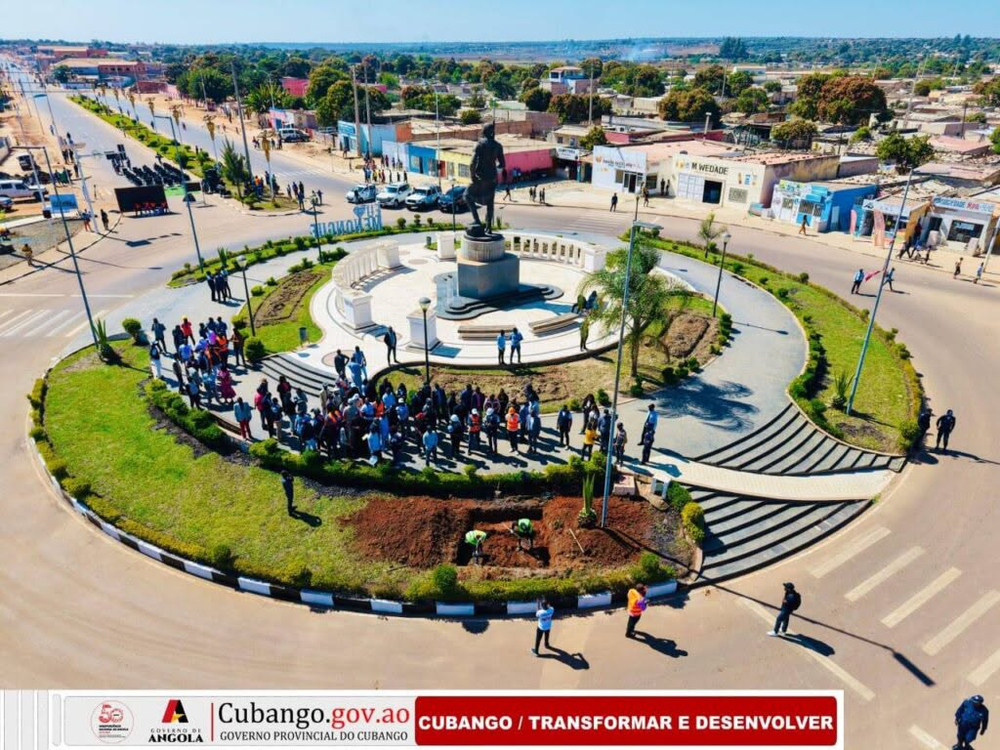

Capital
Menongue

Menongue
91.466 km²
Nganguela, Cokwe e Português
O Cubango é uma nova província de Angola, resultante da divisão do antigo Cuando Cubango. Destaca-se pelas suas vastas paisagens naturais, rios e forte importância histórica militar.